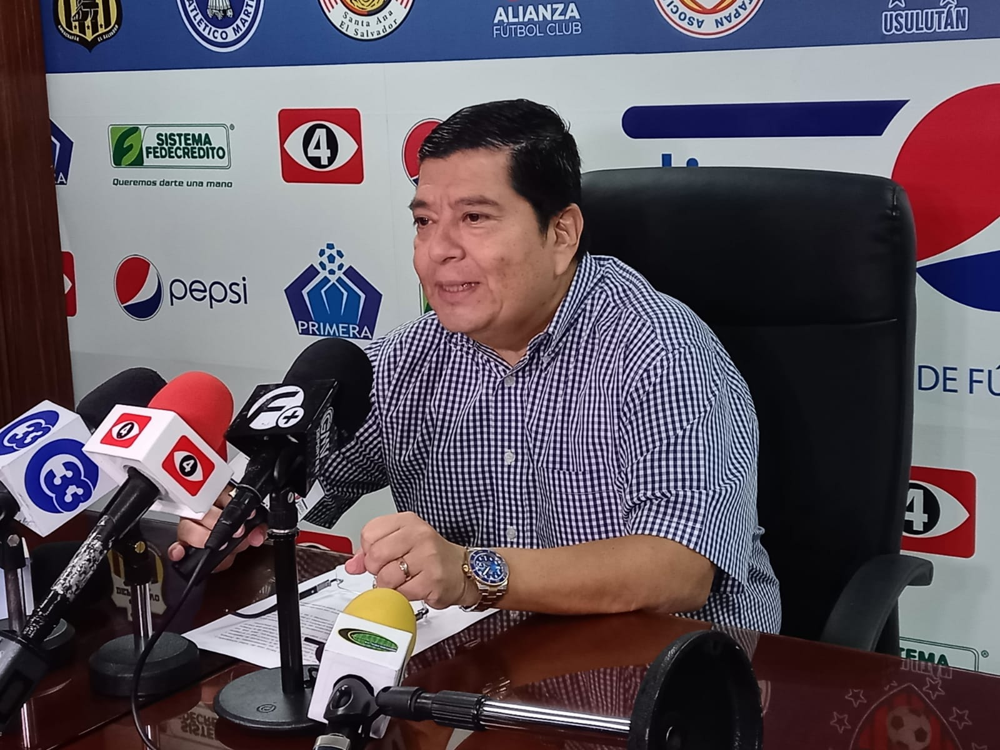

*****
Pedro Hernández,
presidente de la primera división: "Le pedimos al INDES retirar la comisión normalizadora y nos den 15 días para buscar una solución y llevarla a cabo".
presidente de la primera división: "Le pedimos al INDES retirar la comisión normalizadora y nos den 15 días para buscar una solución y llevarla a cabo".
Jugadores de Alianza: Henry Romero, Rodolfo Zelaya, Marvin Monterroza y Narciso Orellana se hacen
presente a la conferencia que la Asociación de futbolistas darán para dar su postura sobre la situación
actual del balompié salvadoreño.
La FIFA advirtió el miércoles que podría suspender a El Salvador de la organización si el
Indes continuaba con la comisión “normalizadora”.
La semana pasada, la Fiscalía allanó el local de la Fesfut en el marco de una investigación por presunta administración fraudulenta y lavado de dinero.
La semana pasada, la Fiscalía allanó el local de la Fesfut en el marco de una investigación por presunta administración fraudulenta y lavado de dinero.
Encuentranos en: